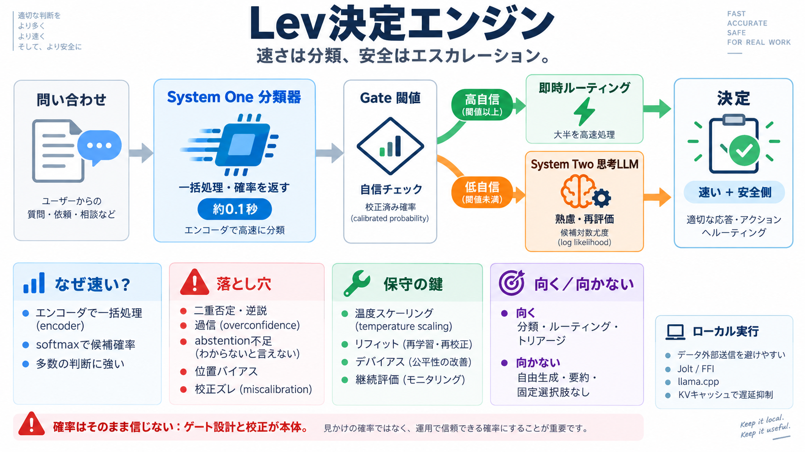

Jev After Eight Days of Independent Tests: Level With Mid-Price ...
The API also rounds every probability to 0.01. In one committed sample, 70.4% of `choice` probabilities came back as exa…

分類で速く、迷えば考える
分類器（System One）で大半を高速にルーティングし、失敗しそうなときだけ思考モデル（System Two）へエスカレーションする設計を整理します。
万能ではない
分類器は確率を一括で返せる一方、推論・二重否定・敵対的表現・過信・棄却（abstention）不足で外すことがあります。
最初の窓口
分類器の「自信」を閾値（gate）にして、低自信だけ遅いLLMへ渡すことで、速さと安全側の判断を両立します。
高速 × 構造化
LLMのようにトークンを逐次生成せず、エンコーダ型モデルで入力を一括処理し、選択肢ごとのスコア→ソフトマックス確率を返します。
幻覚は抑えやすい
出力が構造化（選択肢×確率）なので、生成文の幻覚は起きにくい設計です。ただし誤分類や誤解は通常に起こり得ます。
失敗モード総覧
分類器の確率をゲートに使うほど、推論弱さ・棄却不足・順序バイアス・確率校正ズレの影響が大きくなります。
二段階判断
分類器はCPUで約0.1秒程度。ゲートが低自信と判断した問い合わせだけ、llama.cpp経由で遅い層へ渡して候補確率（トークン対数尤度）を見ます。
並列化でコスト削減
スキーマ固定とKVキャッシュ再利用で、llama.cpp側の必要な選択肢評価を高速化する（並列意思決定フォークのような）実装工夫を行います。
校正は保守要件
校正ズレはゲート誤作動の原因。Levでは温度スケーリング等（リフィット）やデバイアスを用い、ラベルで再校正してcalibration errorを改善します。
できること / できないこと
既知の選択肢・型のある意思決定には強い一方、要約や自由記述など“決め打ち選択肢”が作れないタスクには向きません。
確率はそのまま信じない
性能はゲートの保守性（誤った過信を避ける）と、校正の条件に強く依存します。エスカレーション頻度と精度はトレードオフです。
ローカル & ネイティブ統合
ローカル実行（データ外部送信回避）と、Jolt/FFIでネイティブライブラリ（ICU、BLAS、raylib、llama.cpp等）を扱うことで、バイナリ配布や実行容易性を狙います。
懐疑点も明確
ベンチや確率校正は条件依存。データセット選定・前処理・同一割当での統計的妥当性、さらにエスカレーション総コスト（GPU/待ち行列/ロード）を明示しないと一般化は不確かになります。
結論
Levの核は「高速分類で大半を処理し、低自信だけ思考LLMへ回す」こと。加えてリフィット（校正）とゲート保守性が、確率を意思決定に使う前提条件になります。
The API also rounds every probability to 0.01. In one committed sample, 70.4% of `choice` probabilities came back as exa…
Calibrated 151M Non-Autoregressive Decision Engine beating TypeSafe Jev & Laya on LocalLLaMA/typed-decisions (77.10% acc…
The 2B and 9B packages are released LoRA adapters, scalar heads and calibration parameters; pinned base weights and the …
result. The true probability of face 1 is 1/6, but Jev always chose face 1 and the probability it returned was about 83%…
### Company About Us Careers Blog Contact Us © 2026 RocketReach.co Image 38: Company Logo ## Privacy …